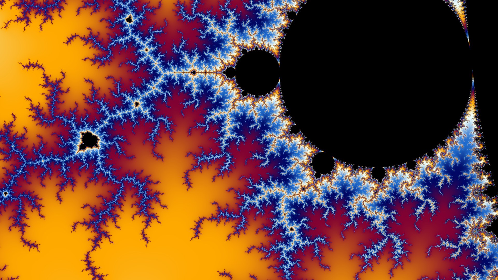
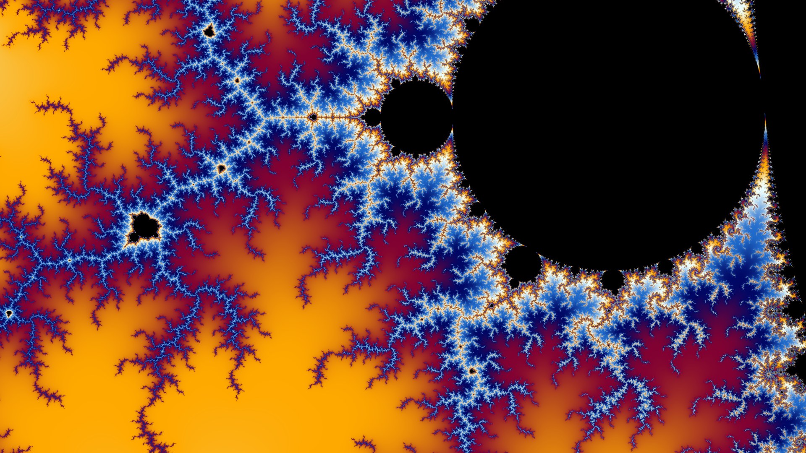

Selected Projects
Training Transformers to Simulate Boids Flocking
Investigated whether transformer neural networks can learn emergent collective behaviors by training a model from scratch to simulate realistic flocking dynamics. The transformer successfully learned to reproduce boid behaviors including separation, alignment, and cohesion and generalized to different flock sizes. This work demonstrates how attention mechanisms can capture complex multi-agent interactions and suggests potential applications for .
Cinema Ticket Booking Platform
Designed and implemented a full-stack movie booking application using ASP.NET MVC architecture. The platform handles seat selection, payment processing, and booking management. Features include user authentication, automated email confirmations.


OpenGL Path Tracer
Implemented a physically-based path tracing renderer using OpenGL compute shaders to achieve photorealistic image synthesis. The engine supports multiple material types including Lambertian diffuse surfaces, perfect mirrors, and physically accurate glass with refraction. Key features include Monte Carlo integration for global illumination, importance sampling techniques for efficient convergence, and progressive rendering for interactive feedback. This project provided deep insights into light transport physics, ray-surface intersection algorithms, and GPU parallel computing optimization.


Holomorphic Function Explorer
Built an interactive application for exploring complex holomorphic functions and their associated fractals. Users can navigate through the Mandelbrot set, Julia sets, and custom complex functions with smooth zooming and real-time parameter adjustment. The application addresses the lack of accessible interactive tools for visualizing complex analysis concepts, featuring optimized rendering algorithms that maintain performance at extreme zoom levels and the ability to customize the holomorphic function.
 


Newton-Raphson Fractal Renderer
Created a visualization system for fractals generated by applying the Newton-Raphson iterative method to complex polynomial equations. Each point in the complex plane is colored according to the length of the path the point must traverse before converging on a root. The renderer supports polynomials of various degrees and coefficients.